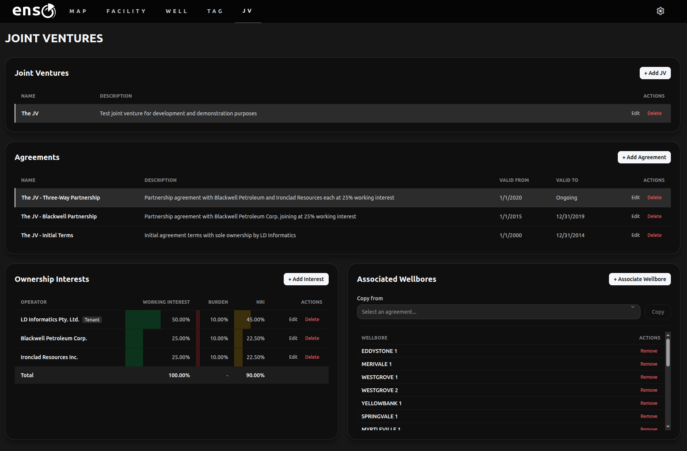
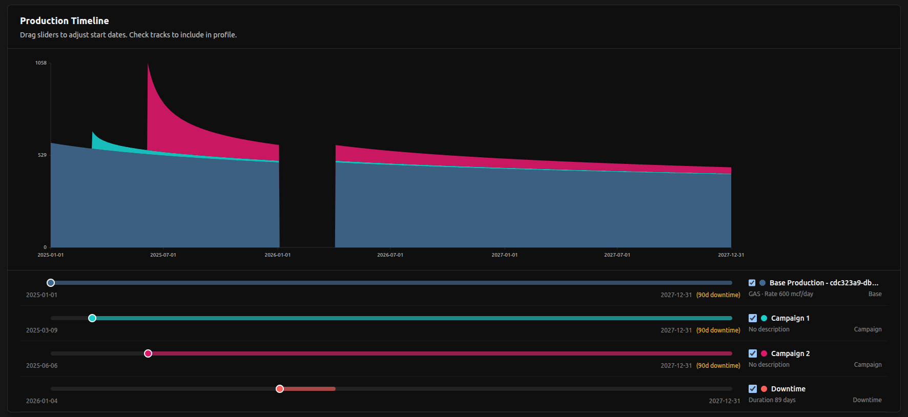
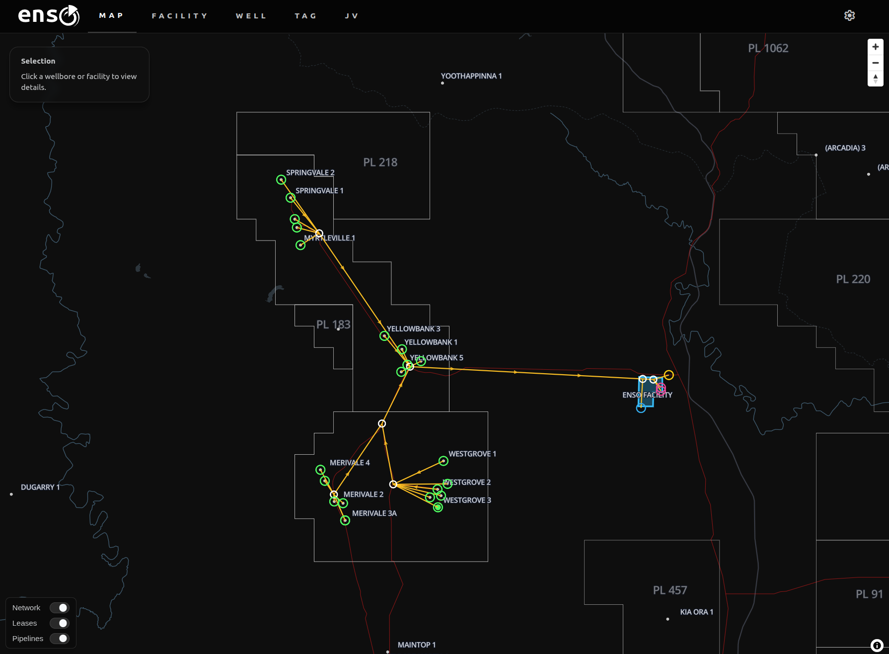
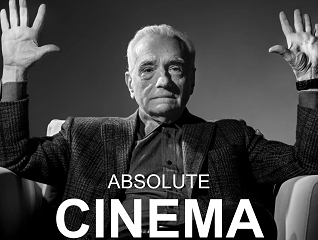

flowchart TD
W1((Well A)) --> MAN[Manifold]
W2((Well B)) --> MAN
W3((Well C)) --> MAN
MAN --> COMP[Compressor]
COMP --> FM((Fiscal Meter))
In my previous post I waxed lyrical/incoherently rambled about the benefits of relational databases and good data modelling, comparing it to the pains I’ve experienced doing data work in spreadsheets.
It is hard to fully communicate the benefits of this kind of work to someone outside of the data engineering space, and I know this because earlier in my career I was totally oblivious to it as well.
I had my DataFrame and I could do whatever I wanted with it with pandas, so why would I have cared about the database? It just stores the data, right? The magic happens downstream in code. (Substitute in spreadsheets as you like.)
Because a database isn’t a digital filing cabinet – a database is a declarative interface to a highly optimized and parallelized computational engine that is the culmination of half a century of research. Your spreadsheet isn’t a replacement. Neither is your Python code.
The things I have built in the past 2 years would be a completely impractical mess without their heavy reliance on the wide range of functionality that relational databases provide out of the box.
At LD Informatics we’ve taken a lot of my learnings while working as an employee and made them concrete in an oil and gas data platform called enso. I think it is a strong showcase of both databases generally, as well as the kind of services and capabilities we can provide to the industry.
What is enso?
Enso is a GIS-enabled data management platform for oil and gas operators that integrates with historian metering systems. It does not just store this data, but doubles as a computational engine for workloads like production allocation, hydrocarbon accounting and JV management.
It is designed from the ground up to radically streamline the calculations of a wide range of important quantities and metrics by vertically integrating data management through the upstream production lifecycle, while providing a GIS interface for efficient data exploration, visualization and network management.
Enso is both a product and a technical showcase.
It is a product in the sense that it can be packaged up and sold with a Platform as a Service model, similar to competing offerings on the market.
It is a showcase in the sense that it is a repeatable set of technologies and practices that can be implemented internally at companies that want to better use their data, while customizing and controlling their process.
The biggest pain points for off-the-shelf solutions are awkwardly fitting them into existing processes, and failing to integrate them effectively. Internal deployments allow the solution to be both customized to internal requirements, and also integrated into other systems so that data can flow between them automatically.
This integration piece is crucial. The magic technology solving all your data problems is significantly less useful if the rest of your company still needs someone babysitting spreadsheets to serve data downstream. You need information pipelines, not hand-pumps.
Who is enso for?
The pattern I have noticed during my career is that data is often underutilized in this industry, regardless of company size.
By that I mean large companies certainly have data infrastructure, but it is often underutilized due to the inability to integrate simple data storage demands with domain- specific workflow automations that maximize its value. There is a “skill overlap gap” between data and technical.
This is the “we mostly ignore the database” problem.
Smaller companies may not even have a database, because the overhead of setting up a data team and cloud infrastructure is too difficult to justify given a lean operating model. There are simply too many other concerns being juggled to carve out the time and budget for it, so engineers make do with the tools they are familiar with.
This is the “excel is our database” problem.
Enso, and LD Informatics more generally, exist to help solve these problems, by
- Deploying internal solutions for companies that want control of cloud infrastructure and data
- Providing a platform as a service model for companies that are not ready for internal cloud infrastructure management
So, what can enso actually do?
Enso’s capabilities
Enso can perform many oil and gas data workloads. Because so much of the business is downstream of operational metering, which enso manages, the platform provides a strong foundation for a vertically integrated system of data pipelines to serve different departments of the business.
Some examples include:
Hydrocarbon accounting
Enso uses a spatiotemporal graph (explored in a bit more detail in this section) to efficiently perform production allocation. It connects to data historian systems that manage high frequency meter data and ingests daily snapshots for production accounting purposes. Tag data is associated with a node in the network, placing measurements in their network and spatial context.
All “terminal nodes” (fiscal meters, gas flaring, water disposal, etc) are dynamically allocated back to their upstream connected wellbores. This means oil, gas and water production streams can be contextualized to their particular node (oil and gas sales, for example) or to wellbores (oil, gas and water streams are the sum of allocated production across all connected terminal nodes).
This means wellbore production accounting also includes any gas flaring, injection, water disposal, etc., with no additional complexity required. The graph handles the relationships, and the database engine handles the allocation. As the network grows, the only overhead is keeping it up to date (and enso provides interactive tooling to do this), the calculation workloads are automated.

Because the data model is dynamic, it also handles error correction seamlessly. If bad data enters the system, it can be corrected with all downstream data products updated along with it. A full audit trail is kept for all corrections made and why. The system also provides diagnostics to flag potentially erroneous measurements, to prevent a “needle in the haystack” problem when hunting through large quantities of tag data.
Building on production allocation, the next natural workload to take on is calculated Joint Venture shares of it.
JV management
By themselves, Joint Venture partnerships are relatively straightforward, but they change, and you might be managing many of them at any given time. Which wells fall under which partnership? Has that partnership been updated recently? Who is managing the spreadsheet that maps them to the production data and does all the calculations, again?

Unifying the data model makes all of this straightforward. If the JV partnership data is up to date, so is everything else. JV shares of allocated production are all generated dynamically on demand, and all respect the historical changes in network topology, JV partner members and their shares, and everything else in the data model. Correcting faulty meter data from six months ago does not cause cascading data invalidation, the correction simply flows downstream to everything else.
BI and GIS integration
The technology stack enso is built on facilitates integration with other tools. Deployed internally, the enso database can be connected to Geographic Information System (GIS) software suites like QGIS or ArcGIS. The integration of GIS data and a relational data model mean that data can be enriched with business context and displayed in GIS software seamlessly. Business Intelligence (BI) suites like Power BI or Tableau offer similar integrations.
If a heatmap of last year’s water production, grouped by lease boundaries is what you need, that is a short SQL query away. If you want to model the distance between wellbores and available fiscal meters to look for network optimization opportunities, that data can be delivered directly into BI tools for interactive visualization. It all comes from the same underlying engine.
The central theme is a rich, integrated, queryable data model.
Enso’s future
Building on the foundation we have, enso is highly extensible. Some examples in our development pipeline include:
Reservoir management
The production network graph can be extended downhole to connect wellbore completions and reservoirs. Well logs can be ingested into the database via a “flag pivot”, storing every individual sand/pay flag with statistical summaries of each log over the interval. Combined with stratigraphic top storage, sand summaries can be dynamically calculated on demand.
Wiring sand intersections to pressure compartments will provide a highly detailed subsurface field model, with all metered data stored in the same system. Cross referencing with pressure points, core plugs and other supporting datasets, will make bringing together many disparate datasets, organized by zone, trivial.
Production planning
Production in enso is allocated to nodes in the network, and future production (forecasts) can be treated in the same way. Production forecasts and scenario modelling can be visualized, managed and audited in the same system that manages GIS layers and historical production data. This naturally lends itself to comparisons between predicted and actual production.

Commercial integrations
Querying price data either by API or integrating with internal price sources/price decks means historical and forecasted revenue estimates can be generated by the system seamlessly. It also means that measures of production efficiency and production losses can be quantified as lost revenue, to put outages and disruptions in their commercial context.
PETEX and other software integrations
Storing network topology and metered data in the same system makes enso a perfect fit for rapid configuration of industry standard integrated modelling solutions like Petex’s PROSPER, MBAL and GAP, and was another primary motivation for the graph-based design. I write more about this here.
AI Integrations
It is not a good idea to ask a fundamentally probabilistic LLM agent to do accounting for you. Deterministic systems built for domains where accuracy is paramount should stay deterministic.
That being said, incorporating AI agents into user service-level elements of software is an area of increasing importance. Our plans for enso are to provide agent-driven (read-only, and indirect) database access, so that data reports can be generated in response to natural language queries. This means no SQL skills would be required to get answers to detailed data questions.
Combine this with tools that allow the AI to build visualizations, and a “generative UI” style interface becomes possible, where users can ask for dashboards built to answer specific queries to be generated on the fly.
There is also the fundamental piece of programmatic access for agents (or other programs) to facilitate information flows between enso and other internal systems.
I am building with a near term future in mind where much of software interaction is occurring via agentic processes, and less by UIs built for humans. With the way things are moving, modern software needs to account for both human and agent ergonomics.
How does enso work?
The three design pillars that make enso possible are:
- Database Centric Architecture - computations primarily occur in the database engine, not in external services
- Spatiotemporal Graphs - because production systems form an evolving, interconnected network laid out in the physical world
- GIS - because production systems (and oil and gas assets in general) have a geographic footprint, and maps are the most intuitive way of interfacing with them
More concretely, the production network is encoded as a Directed Acyclic Graph (DAG), where fluid flows follow the edge direction between nodes. Each node in that graph is geolocated, allowing you to place the network in its geographic context on a map. The network evolves as wells are connected, taken offline, or production is rerouted. The historical network topology is stored.
The wider relational data model is joined to the nodes to allow for flexible querying between the graph and other key entities, which places all of them in their network context seamlessly.
Why graphs?
Fundamentally, graphs are the optimal data modelling choice for a platform like enso, because they map most naturally to the problem space. Production networks are well represented by graphs, and that coherence leads to more elegant solutions for many data workloads.
For example:
Production Allocation
Production allocation requires that high accuracy metering is allocated back to individual wellbores, such that their production is consistent with the downstream measurement.
It is a fundamental requirement for field modelling as it allows reservoir engineers to work with high accuracy estimates for how much each well is producing, and from which reservoirs in the subsurface production is coming from.
There are various ways to do it, but fundamentally the process requires an estimate of each wellbore’s “production potential” on a given day. The calculation of production potential in turn (regardless of the particular method used), requires:
- Identification of the set of wellbores connected to the downstream meter being allocated to
- A comparative measure, normalized across that set, to calculate the allocation factor of each fluid phase at each wellbore (commonly individual well meters, or the most recent production test for each well)
- Multiplication of the downstream meter value by the allocation factor for each wellbore
In principle, a very simple procedure, but as the network grows an increasingly difficult one.
For example, consider the following simple network:
Allocation on a given day could be performed by:
Spreadsheet
- Get wellbore meter data
- Use a VLOOKUP to find the fiscal meter each well is connected to
- Calculate allocated production
Database foreign keys
- Get the wellbore meter data
- JOIN on the fiscal meter based on a direct wellbore -> fiscal meter foreign key
- Calculate allocated production
Graph
- Get the wellbore meter data
- Traverse the graph to find each well’s downstream fiscal meter
- Calculate allocated production
With such a simple network a spreadsheet works fine. The graph implementation requires additional traversal logic, making it overkill for this example. But real production networks are much more complicated:
flowchart TD
W1((Oil A)) --> M1[Manifold A]
W2((Oil B)) --> M1
W3((Gas A)) ---> M2[Manifold B]
W4((Gas B)) ---> M2
W5((Gas C)) ---> M2
M1 --> SEP3[3-Phase Separator]
M2 --> SEP2[2-Phase Separator]
SEP3 ---> COMP[Compressor]
SEP2 --> COMP
COMP --> FLR((Gas Flare))
COMP --> FMGAS((Gas Fiscal Meter))
COMP --> FGC((Gas Fuel))
SEP3 ---> WD((Water Disposal))
SEP2 ---> WD((Water Disposal))
SEP3 ---> PUMP[Export Pump]
PUMP --> FMOIL((Oil Fiscal Meter))
PUMP --> FGP((Gas Fuel))
This is where the graph representation of the network clearly pulls ahead. There are now 6 terminal nodes (the oil fiscal meter, gas fiscal meter, gas flare, water disposal, and two fuel gas nodes) that all need to be accounted for to properly calculate the allocated production for each well, instead of the single fiscal meter in the previous example.
For example, for a given well the gas production is not just the gas allocated from the fiscal gas node, but the sum of allocated flare gas, fuel gas and sales gas. Headache!
The graph traversal logic resolves all of these relationships for us:
flowchart TD
FLR((Gas Flare))
FMGAS((Gas Fiscal Meter))
WD((Water Disposal))
FMOIL((Oil Fiscal Meter))
FGC((Gas Fuel))
FGP((Gas Fuel))
W1((Oil A)) --> FMOIL
W1 --> FMGAS
W1 ----> FGC
W1 ----> FGP
W1 ---> WD
W1 ----> FLR
W2((Oil B)) --> FMOIL
W2 --> FMGAS
W2 ----> FGC
W2 ----> FGP
W2 ---> WD
W2 ----> FLR
W3((Gas A)) --> FMGAS
W3 ----> FGC
W3 ---> WD
W3 ----> FLR
W4((Gas B)) --> FMGAS
W4 ----> FGC
W4 ---> WD
W4 ----> FLR
W5((Gas C)) --> FMGAS
W5 ----> FGC
W5 ---> WD
W5 ----> FLR
This looks like a nightmare, but that’s the point! Encoding all of these relationships with VLOOKUPs or foreign keys quickly creates a mess.
The allocation math is easy! The relationships are the difficult part. Define the graph and let it resolve the relationships for you.
The allocation algorithm just repeats the same logic over each set created dynamically by the graph. Water allocation occurs over the full set, oil allocation occurs over the oil set, and so on. Databases are built for these kinds of set-based operations.
Network changes
Imagine a manifold is rerouted to a different facility and fiscal metering endpoint, maybe as a result of a production optimization effort.
How would you handle this?
Spreadsheet
- Find all wells that are affected by the network change
- Remap all of those wells to the correct downstream meter via updates to VLOOKUPs
- Maintain the history of production network changes, so that data before the change and data after remain correct in the event things need to be rerun retrospectively (or just hope that never happens)
Enso
- Update an ‘edge’ to reroute the network
That’s it. All the well groupings, network change history and production allocation will keep working just as before. And not just for sales points, by the way, the same allocation logic is being updated for all flaring, fuel and water disposal accounting, as well.
The network change history is retained and fully auditable, and all production accounting is reproducible throughout the lifecycle of the asset.
Integrated Network Modelling
Even I’m not crazy enough to advocate GAP style network modelling being done in a database. There is a fairly clear dividing line between where database logic ends and application logic begins, and complex optimization problems fall very clearly on the application side.
That being said… How are you getting all that data into your GAP model? In my experience it is a large piece of work to even configure the thing to run. Doing it manually by hunting through spreadsheets and finding good representative data across your network would be a complete nightmare, and make iterating on network modelling, or updating the model at a decent cadence, basically impossible.
So here’s an idea… Your data platform does it for you. Enso stores the network topology and all metered data (at daily resolution), which makes a database connector to GAP models via OpenServer a largely automatic process.
flowchart TD
ENSO[(enso)]
OPENSERVER[OpenServer]
GAP[GAP]
PROSPER[PROSPER]
APP[Controller]
FORECAST[Forecasts]
ENSO <--> APP
APP --> OPENSERVER
OPENSERVER --> PROSPER
PROSPER --> GAP
OPENSERVER --> GAP
GAP --> FORECAST
FORECAST --> ENSO
A thin application layer acts as a controller that translates data outputs from the database to OpenServer DoSet calls, which configure PROSPER and GAP models. The operator just chooses the representative date they want the data to come from.
If the selection process requires more nuance, they can be encoded in the query that provides the data. A set of boolean flags can help filter out unwanted data points, and the database can find more appropriate data as close as possible to the target date, for example.
This is all facilitated by enso’s domain coherent approach to data modelling. The system knows the production network, and it organizes all data to support it. In data nerd talk, the impedance boundary between the data and downstream application workloads is minimized. In normal person talk – no more data wrangling nightmares, and dramatically faster cycle times for network modelling.
Why GIS?
Hopefully the benefits of the graph are clear, and quite manageable for smaller assets, but if your company manages a large asset, isn’t that network going to become a nightmare to maintain?
… Yes!
Imagine you have thousands of wells producing, and new wells coming online every other day. An abstract floating graph with thousands of nodes will quickly become impossible to navigate.
So put it on a map.

It’s that simple. The whole production network is laid out logically in the physical world, so represent it in the digital world the same way. Now, managing the network is about as complicated as choosing a restaurant for dinner on Google Maps.
I’m admittedly a bit of a GIS fanatic, but for good reason. Maps are one of the most intuitive data interfaces we have. Subsurface workers live and breathe 2D and 3D GIS canvases, but something gets lost as you move to surface engineering, for some reason. The same GIS awareness of assets should be shared across technical teams.
You can’t present these kinds of data effectively in a spreadsheet. Walls of numbers will give your team eye-strain, not operational excellence.
Place everything in its geographic context, and onboarding a new team member is more “take a look at the map”, and less “let’s find a time next week to go through the master spreadsheet, please don’t open it unsupervised before then”.
The Everything Database
Enso is built on PostgreSQL and PostGIS. The extensibility that PostgreSQL supports makes it an extremely flexible and powerful data modelling playground.
Enso is leveraging it for many purposes, including:
- Relational data storage and querying
- GIS
- Graph-based spatiotemporal network modelling
- The production allocation engine (along with almost all data calculations downstream of it)
- Many data aggregation tasks used in the frontend (map layers, cards, chart data preparation)
- Security guarantees via RLS policies
This may sound like too much for one service to handle, but keep in mind that we are talking about a single-tenant data platform serving maybe 500 users at most. This is all manageable by a single database server and a connection pooler.
Although graph traversal in SQL requires the use of recursive CTEs, which are pretty verbose and scary-looking, being able to integrate GIS, graphs and relational data modelling in a single system more than makes up for it. The main graph traversal logic is stored as views, so in practice it adds very little complexity for us developing it and operators using it.
Importantly, the system does not lose anything by incorporating geospatial, it is really all upside from a platform capability perspective.
The ability to serve GeoJSON from the database directly to GIS software or your custom frontend with queries as simple as this:
SELECT json_build_object(
-- Query level metadata
'type', 'FeatureCollection',
'count', COUNT(e.*),
-- List of features
'features',
jsonb_agg(
jsonb_build_object(
'type', 'Feature',
-- create lines between the nodes each edge is connected to
'geometry', ST_AsGeoJSON(n1.geom, n2.geom))::jsonb,
-- edge metadata
'properties', jsonb_build_object(
'edge_webid', e.webid,
'from_node_webid', n1.webid,
'to_node_webid', n2.webid,
'from_node_name', n1.name,
'to_node_name', n2.name,
)
)
),
)
)
FROM public.edges AS e
JOIN public.nodes AS n1 ON n1.id = e.from_node_id
JOIN public.nodes AS n2 ON n2.id = e.to_node_id… it’s enough to turn you into a fanatic.
Oh, we need a bounding box filter? Make the query a function, add a simple bounding box CTE and join on it with ST_Intersects(). It’s just SQL joins! But in SPACE?! I mean, are you kidding?
And with that in mind, remember that the rest of the relational data model is sitting there, waiting for whatever arbitrary geospatial computation or visualization you could ever want.
Quarterly cumulative production bubble maps at facilities? Done.
Allocation factor heatmaps at wells for quick visual diagnosis? No problem.
Inverse distance weighted reservoir properties cross referenced to stratigraphic interval, aggregated across prospect polygons simultaneously calculating screening volumetrics for 120 leads, combined with distance to nearest tieback point and turned into a lease potential heat map?
I WON’T SAY NO PROBLEM.
BUT I WILL SAY I’VE DONE IT.
PostGIS is an unbelievably powerful tool.
All coming direct from your database to your GIS interface with a single SQL query.

To conclude
Nerd-ranting aside, we are very proud of what we’ve built with enso. It is deployment ready and we are continuing to enhance it.
Enso utilizes a specific technology stack and data modelling approach to radically streamline oil and gas data workloads. It is both a platform and a set of practices that companies can use to improve their data management and utilization. It also provides a foundation for more sophisticated analytics and agentic AI workloads.
We are ready to work with companies to help solve data challenges. This article isn’t a sales pitch, but if you read it and some of the pain points resonated with your experiences at work, don’t hesitate to contact us.
Thanks for reading.